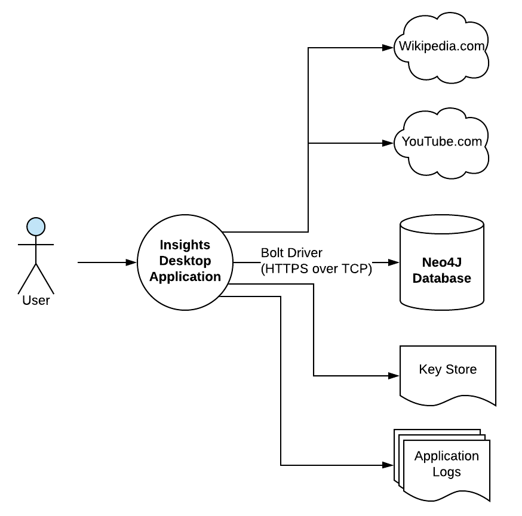

The System Context
Insights is simple in concept. It is a desktop application that enables the user to capture data that is important to them in the way they want to capture it. As seen in the diagram below, there is a single persona of user that directly interacts with Insights via the user interface. The application in turn communicates with the user specified Neo4J graph database via the Javascript Bolt driver. Additionally, the application can fetch remote content such as web pages or streaming video from 3rd party systems such as Wikipedia.com or YouTube.com. 